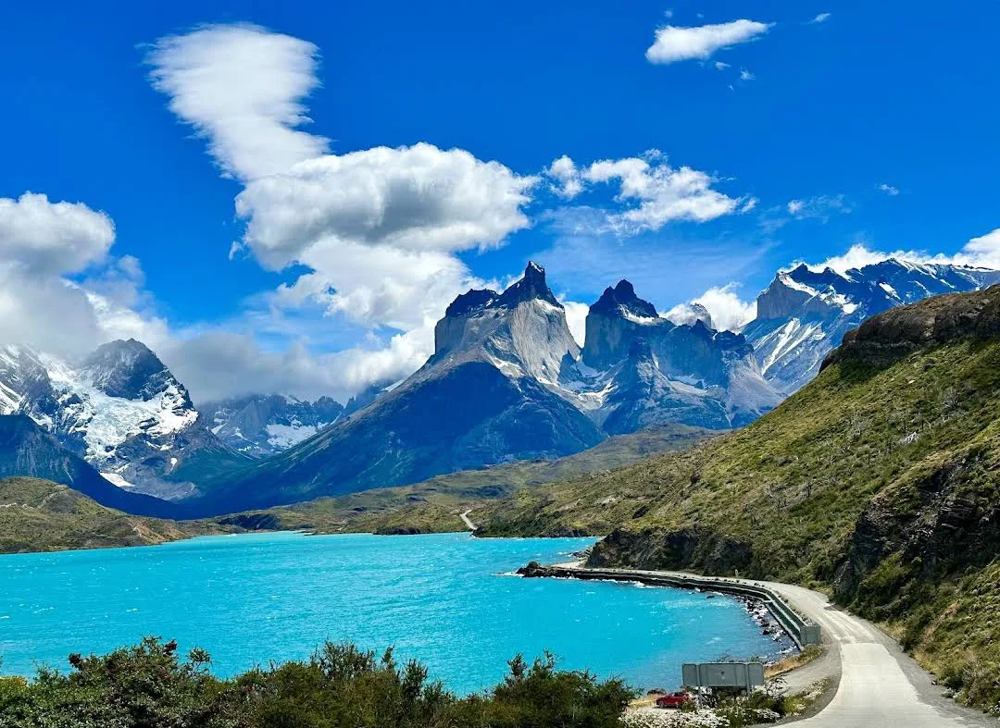

When you look at travel blogs and Instagram accounts, it's easy to get caught up in the fantasy. Beautiful photos of exotic locations, exciting adventures, and smiling faces. It looks like a dream life. And in many ways, it is. But there's also a reality to travel blogging that most people don't see.
We've been travel blogging since 2014, and while we absolutely love what we do, it's not all rainbows and butterflies. In this post, we pull back the curtain to show you what life is really like as a travel blogger.
The Reality of Travel Blogging
Most people see the beautiful photos on Instagram and assume that's what our entire life looks like. The reality is that those perfect moments are just that - moments. For every beautiful sunset photo, there are hours spent editing photos, writing content, dealing with technical issues, and worrying about website traffic.
Travel blogging is essentially running a small business. We wear all the hats - content creators, photographers, writers, editors, marketers, accountants, IT support, and more. The travel part is wonderful, but it's only about 20% of what we actually do.
A Typical Day
Here's what a typical "work day" looks like for us when we're on the road:
- 6:30 am - Wake up early to catch sunrise photos
- 8:00 am - Breakfast while answering emails
- 9:00 am - 12:00 pm - Exploring, taking photos and notes
- 12:00 pm - Quick lunch while backing up photos
- 1:00 pm - 5:00 pm - More exploring and content creation
- 5:00 pm - 7:00 pm - Editing photos
- 7:00 pm - Dinner while planning next day
- 8:00 pm - 10:00 pm - Writing blog posts or updating old content
- 10:00 pm - Social media engagement
What We Love About Travel Blogging
Despite the challenges, we absolutely love what we do. Here are some of the best parts:
Freedom and Flexibility
We get to set our own schedule and work from anywhere with an internet connection. If we want to spend an extra day somewhere, we can. If we need a break, we take it.
Meeting Amazing People
We've met incredible people from all over the world - both locals and fellow travelers. These connections have enriched our lives in ways we never expected.
Learning New Skills
We've had to learn photography, videography, SEO, social media marketing, web design, and more. It's been challenging but incredibly rewarding.
The Challenges of Travel Blogging
It's not all glamorous. Here are some of the biggest challenges we face:
Unpredictable Income
Income can vary wildly from month to month. Some months we do great, others we barely cover expenses. It requires careful financial planning.
Always "On"
Even when we're not officially working, we're always thinking about content. That beautiful sunset? We're figuring out the best angle for photos instead of just enjoying it.
Technical Issues
Website crashes, plugin conflicts, server issues - these can ruin an otherwise perfect day when you're the one responsible for fixing them.
Missing Home
We love traveling, but we also miss having a home base, seeing family regularly, and the simple comforts of a stable life.
Final Thoughts
Travel blogging has given us incredible opportunities and experiences we never dreamed possible. But it's important to understand that what you see on social media is just a highlight reel. Like any job, it has its ups and downs.
Would we change anything? Absolutely not. But we want to be honest about what this lifestyle really entails for those considering it.
If you're thinking about becoming a travel blogger, we recommend starting it as a side hustle first. Build your audience and income streams before taking the leap to full-time.
Comments
Thanks for keeping it real! I've always wondered what the day-to-day was like for travel bloggers. It sounds like a lot more work than most people realize.
ReplyAs a fellow travel blogger, I can confirm everything you've said here. The hardest part for me is balancing creating content with actually experiencing the places I visit.
ReplyThis is so refreshing to read! I'm thinking about starting a travel blog but wasn't sure what to expect. Your honest perspective is really helpful.
ReplyLeave a Comment